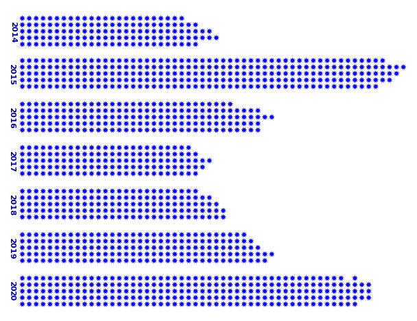

Signalements de
contenus racistes*²

Le graphique représente les signalements en ligne liés à la xénophobie et aux discriminations en France de 2014 à 2020, chaque étoile représentant une centaine de signalements. ©Pharos
Google trend*³
Recherches Google sur le thème du cyber-harcèlement entre 2010 et 2022
Déclaration*4
Pourcentage de parents qui déclarent que leur enfant déjà à été victime de cyber-harcèlement de 2011 à 2018
La hausse des déclarations est un signe positif de la prise de conscience croissante de ce problème et de la volonté de protéger nos jeunes générations des dangers en ligne ©comparitech